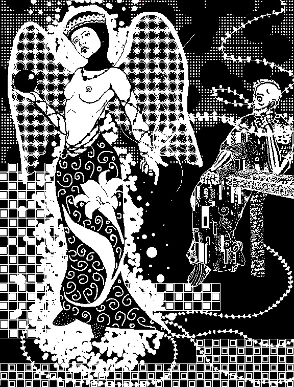
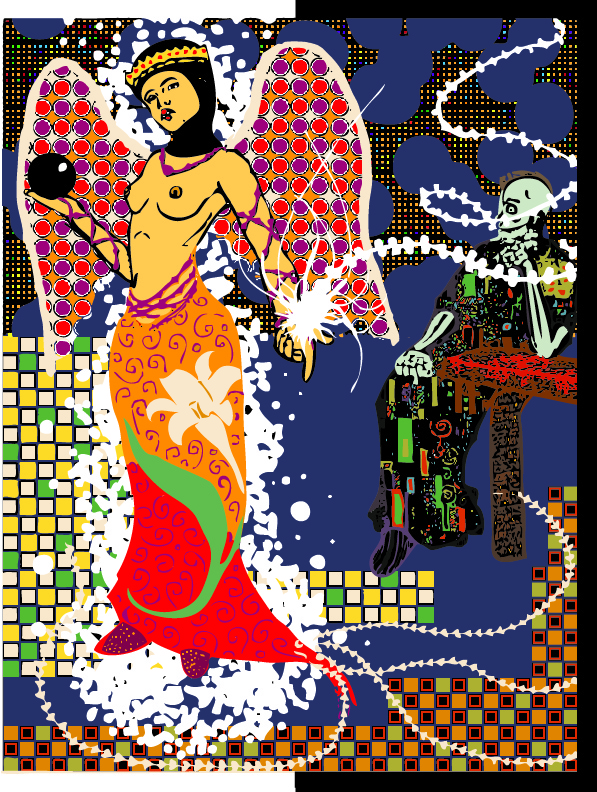

Archives > Paintings and Illustrations > Lilium
Lilium
Digital Illustration | 2012
"Lilium" is an artwork that I created during my art studies years ago. Initially, it was a casual notebook sketch that I developed into a digital painting using Adobe Photoshop. The goal of the project was to then convert the digital painting into a vector artwork to better learn Adobe Illustrator.
During the creation process, I was inspired by the intricate patterns found in the works of Gustav Klimt. Additionally, my art history studies introduced me to the historical use of nudity in art as a representation of an idealized form or god, which challenged my previous approach to figure representation and offered a new perspective.
Liluium - Black and White version from Photoshop.

Liluium - Color version from Illustrator.

Original doodle I found in my notebook.